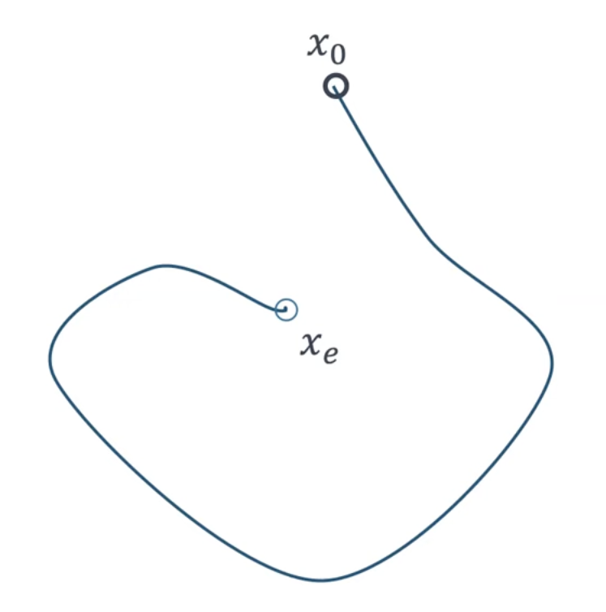
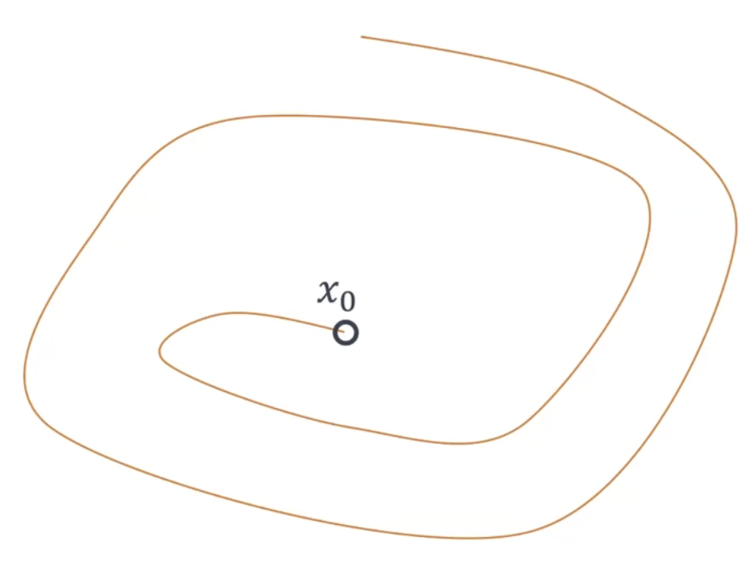

Integration of Control Lyapunov and Control Barrier Functions for Safety-Critical Guarantees in Aggregate Computing
Angela Cortecchia

How will the drones avoid the obstacle?

Current approach

Potential issues:
- eventual consistency;
- loss of formation.
Eventual consistency
How much time will it take to re-form the formation?

Eventual consistency
Potential issues on the transient behavior

Possible consequences of losing the formation

- Lost connection
- New leaders
- Sub-formations going in different directions
How we would like it to behave

Did not lose formation, neither connection, avoided the obstacle safely and keep going towards their goal.
Our goal
Ensure guarantees on the transient behavior of the system, not only on the eventual one.
How can we achieve it?
In control theory, there exist formal methods to specify both stability and safety conditions:
- Control Lyapunov Functions (CLF) for fast convergence and stability;
- Control Barrier Functions (CBF) for safety in the transient behavior.
Preliminaries: Control Theory
Control Theory is a branch of engineering and mathematics that deals with the behavior of dynamical systems with inputs (controls).
The main goal is to develop control strategies that modify the system’s behavior to achieve a desired state,
while minimizing delays or errors, while ensuring safety and control stability.
Control can only be applied with respect to the system’s temporal evolution.
A Control Loop is a feedback-driven mechanism that measures the current state of a system, compares it to a desired set-point, and automatically adjusts the control input to minimize the error between the two.
Preliminaries: Open and closed loop controls
An automatic control system can operate in two ways: as an open-loop control or as a feedback (closed-loop) control.
Open-Loop Control
The control input is determined without considering the current state of the system.
It relies on predefined control actions based on a model of the system.
Feedback / Closed-Loop Control
The control input is continuously adjusted based on the current state of the system.
It uses feedback from the system to correct deviations from the desired state.


Preliminaries: Lyapunov Theory
Lyapunov Theory provides tools to analyze the stability property of dynamical systems.
An autonomous dynamical system without a control input is described by the equation
$\dot{x} = f(x)$
Starting from an initial state $x_0$, there exist some trajectory from there, and we want to verify whether the system converges to a desired equilibrium point $x_e$.

Preliminaries: Lyapunov Theory
- $s.t. V(x_e) = 0, V(x) > 0 for x \neq x_e$,
- $\dot{V}(x) = \frac{\partial V}{\partial x} f(x) < 0$ for $x \neq x_e$,
The evolution of the Lyapunov function over time will decrease towards $x_e$.
This implies that the system is stable and will converge to the desired equilibrium point.
Every positive level set of the Lyapunov function is an invariant set
$\Omega = \left\{ x \mid V(x) \le c \right\}$.
If you start within that set, your trajectory will remain inside it for all future time.


Preliminaries: Nagumo’s Invariance Theorem
Given a different function $\dot{x} = f(x)$ and a different trajectory:
Our goal is to ensure that the trajectory remains within a region of interest.
Preliminaries: Nagumo’s Invariance Theorem
$\mathcal{C} = \{ x \mid h(x) \geq 0 \}$ → super zero level set of $h$
To guarantee that trajectories never leave $\mathcal{C}$ (safety), it is enough to ensure that, on its boundary:
$\dot{h}(x) \geq 0 \forall x \in \partial \mathcal{C}$
If the condition holds, $\mathcal{C}$ is forward invariant:
once inside, the system will always remain inside the safe region.

Preliminaries: Control-Affine Systems
A Control-Affine System is a dynamical system described by the equation:
$\dot{x} = f(x) + g(x)u$
where:
- $x \in \mathbb{R}^n$ is the state vector (position, velocity, etc.),
- $u \in \mathcal{U} \subset \mathbb{R}^m$ is the control input (input, actuator commands, etc.),
- $f: \mathbb{R}^n \to \mathbb{R}^n$ is the drift vector field (the natural evolution of the system without control),
- $g: \mathbb{R}^n \to \mathbb{R}^{n \times m}$ is the control input matrix (how the control input affects the system).

Preliminaries: Lie Derivatives
The Lie Derivative of a differential scalar function $h: \mathbb{R}^n \to \mathbb{R}$ along a vector field $f: \mathbb{R}^n \to \mathbb{R}^n$ is defined as:
$L_f h(x) = \frac{\partial h}{\partial x} f(x) = \nabla h(x) \cdot f(x)$
It represents how $h(x)$ changes in time as the state evolves according to the system dynamics.
For a Control-Affine System $\dot{x} = f(x) + g(x)u$, the time derivative of $h(x)$ is:
$\dot{h}(x, u) = L_f h(x) + L_g h(x) u$
where:
- $L_f h(x)$ is the Lie Derivative of $h$ along $f$ (drift term),
- $L_g h(x)$ is the Lie Derivative of $h$ along $g$ (control term),
- $u$ is the control input.
This notation captures how $h(x)$ evolves due to both natural dynamics and control input over time.
Control Lyapunov Functions (CLF)
A continuously differentiable function $V: \mathbb{R}^n \to \mathbb{R}_{\geq 0}$
is a Control Lyapunov Function for the target set $\mathcal{X}_d \subseteq \mathbb{R}^n$ if:
- $V(x) = 0$ for all $x \in \mathcal{X}_d$ and $V(x) > 0$ for all $x \notin \mathcal{X}_d$ (positive definiteness);
- For all $x \notin \mathcal{X}_d$, there exists a control input $u \in \mathcal{U}$ such that for some constant $c > 0$ *:
$L_f V(x) + L_g V(x) u \leq -cV(x)$
This condition ensures that $V(x(t))$ keeps decreasing over time, so the state $x(t)$ moves closer and closer to the desired target set $\mathcal{X}_d$.
In practice, this means we can drive the system toward its equilibrium, proving that the system is stabilizable through feedback control.
CLF Example: point stabilization
For a system $\dot{p} = u$ where we want to stabilize the position $p$ of a point at a desired location $p_d$.
We want to design a control input $u$ that drives $p$ towards $p_d$.
We then define:
- the CLF: $V(p) = || p - p_d ||^2$
- the Lie Derivatives of $V$ along $f$ and $g$ respectively: $L_f V(p)=0$ $L_g V(p) = 2(p - p_d)$
Thus, $\dot{V}(p,u)=2(p-p_d)^\top u$ which links the control input $u$ to the rate of change of $V$.
Choosing a control input $u$ such that:
$u=-k(p-p_d)$ for some $k > 0$ ensures that $\dot{V} = -2k || p - p_d ||^2 \leq 0$
Which guarantees that $V(p)$ decreases exponentially over time, driving $p$ towards $p_d$ and stabilizing the system at the desired point.
Control Barrier Functions (CBF)
A continuously differentiable function $h: \mathbb{R}^n \to \mathbb{R}$ is a Control Barrier Function for the safe set
$\mathcal{C} = \{ x \in \mathbb{R}^n \mid h(x) \geq 0 \}$
We want $\mathcal{C}$ to be forward invariant, i.e., if the system starts or enters in $\mathcal{C}$, it remains in $\mathcal{C}$ for all future time.
$h$ is a CBF if:
- $h(x) > 0$ for all $x$ in the interior of $\mathcal{C}$, $h(x) = 0$ for all $x$ on the boundary of $\mathcal{C}$, and $h(x) < 0$ for all $x$ outside $\mathcal{C}$ (set definition);
- For all $x$ in $\mathcal{C}$, there exists a control input $u \in \mathcal{U}$ such that for some constant $k > 0$ *:
- $L_f h(x) + L_g h(x) u \geq -k h(x)$
This condition ensures that the system’s state remains within the safe set $\mathcal{C}$ over time, preventing it from entering unsafe regions.
CLF-CBF-Quadratic Program
Research question(s)
- How to integrate CLF and CBF in Aggregate Computing?
- How to specify safety-critical requirements both at the single and the collective level?
- How to enforce safety and stability guarantees during the transient behavior of distributed adaptive systems?
How to integrate CLF and CBF in Aggregate Computing?
Aggregate Computing + CLF + CBF use cases
Formal mechanism to guarantee safety properties, e.g.:
- Obstacle avoidance while maintaining formation;
- Collision avoidance between agents;
- Safe navigation in dynamic environments;
- Staying inside a designated area;
- Maintaining sufficient network connectivity;
- Respecting density limits in regions of interest.